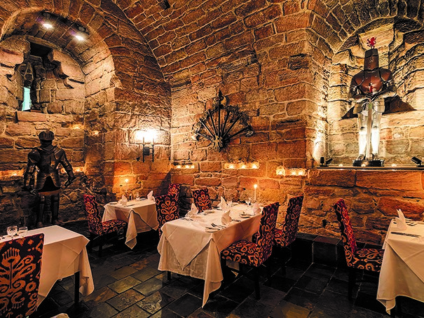
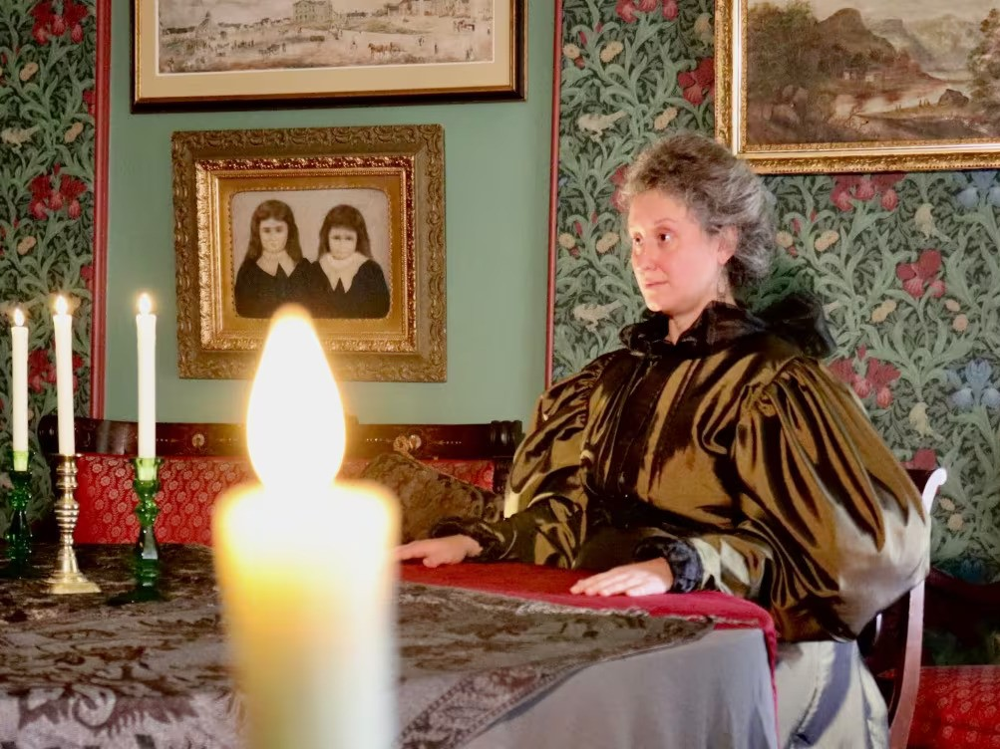

Attractions
The Great Castle
Tour this ancient 52-acre castle. It's hallowed cobblestone walls were built long ago. When Herald's hold was once a kingdom, this grand castle was built to house the Royal family. After the New Dawn, the monarchy was abolished and the Arbiters took residence in the higher castle. Take a tour of the inside and learn more about the history of the castle and the instanciation of the Arbiters. If history isn't your cup of tea, take a tour of the sculpture gardens. See over 100 sculptures from local artists and the beatiful conservatory upheld by volunteer student's from the college.
The College of the Herald
After the New Dawn, the lower castle was converted into a college for mages. During the school year, students learn how to harness the magic of the Weave. Take a tour of the number 1 magical institution in all of Nocturne. Prospective students can talk to current students and faculty to get a feel for the culture of the college. Tourists can see lectures and other demonstrations to see the capablities of the students and faculty.

The Weeping Wraith
Tucked away on Main Street, this quaint little shop seems unassuming. This store is encahnted to be much larger on the inside than on the outside. The owner, Ingrat, stocks the shelves with any kind of magic item you could imagine. Magic beans, ancient artifacts, cloaks of invisiblity, unicorn hair, and much more. Whether you are looking for something magic to spice up your home or just want to look around, the Weeping Wraith is a must for any tourist coming through the Hold.
Meriam's Divinery
Have you ever wished you could see the future? In Meriam's Divinery, you can! Meriam comes from a long line of soothsayers. She offers many different kinds of readings: tarot cards, astrology dice, oracle bones, and many more. Her rates are very affordable with high customer satisfaction. Have a larger party and don't want to pay for all those readings? She does party readings at only a slight upcharge from an individual. You can't get that kind of deal anywhere else.